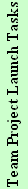

Using the Process Dashboard for Team Projects - Overview
Process Mentor / Coach
Install Process Dashboard with Team Features
Define Metrics Collection Framework
Create Forms and Reports for Organizational Use
Plan Team Dashboard Deployments
Program Manager
Team Leader
Team Members
Setup Team Dashboard Data Storage
Install Process Dashboard with Team Features
Install Process Dashboard
Create Master Project
Create Team Project
Add Team Projects to Master Project
Invite Team Members to Join Team Project
Join Team Project
Create or Obtain Forms and Reports for Project Use

Define Top-Down Tasks for Master Project
Enter List of Team Members
View Consolidated Master Project Planning Data
Plan Overall Project Strategy
Plan Project Development Process
Plan Project Support Tasks
Develop Balanced Project Plan
Synchronize Work Breakdown Structure
Edit Planned Task Schedule
Export Data
Import Data
View Bottom-Up Team Plan
Create Quality Plan
Save Backup of Project Data
Track Project Progress
Collect Earned Value Metrics
Manage Team Plan
Refine Personal Project Plan
Manage Team Data
Manage Personal Earned Value Schedule
Analyze Process Metrics
Manage Process Metrics
Manage Permissions and Privacy